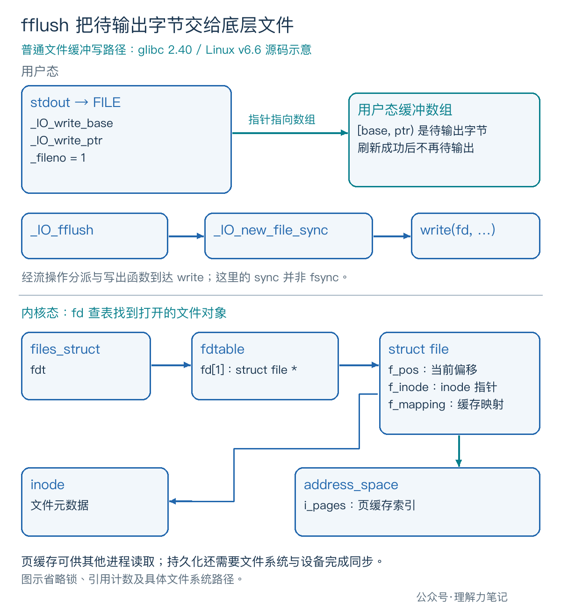
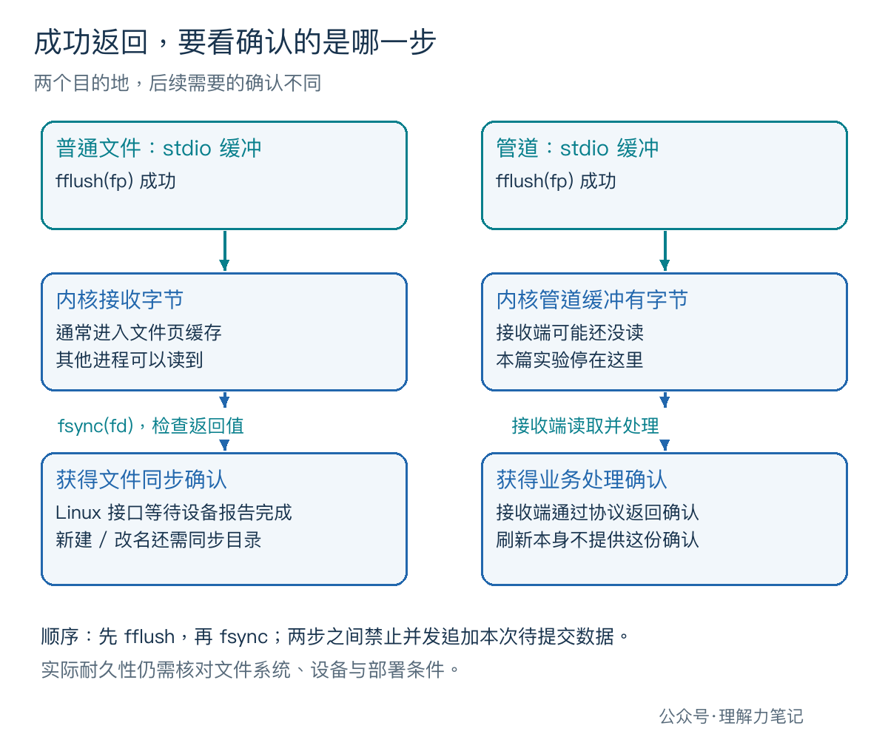

程序写完一条记录，fflush(fp) 返回 0，另一个进程也能读到它。这时能告诉用户“断电也不会丢”吗？
结论：对于关联文件描述符的输出流，
fflush成功表示待输出数据已交给底层文件。普通文件的数据仍可能留在内核缓存中；需要文件持久化确认时，应先检查fflush，再检查fsync。写入管道时，刷新成功也不代表接收端已经处理。
这篇文章怎么读？
只想确认刷新边界，看第一章；需要设计保存流程，接着看机制和工程用法。
| 你是谁 | 看哪一章 | 会得到什么 |
|---|---|---|
| 搜索者 / 被推荐者 | 第一章 · 先解决问题 | 用实验分清刷新和同步 |
| 学习者 | 第二章 · 机制解释 | 从 FILE 缓冲追到内核文件对象 |
| 编程者 | 第三章 · 工程使用 | 确认边界、调用顺序与失败处理 |
| 求职者 | 第四章 · 面试提炼 | 解释为何读得到仍不能证明落盘 |
把 stdout 重定向到普通文件，先写入 9 个字节，然后停在观察点。此时程序仍在运行，尚未关闭流，另一个进程可以检查文件内容。
实测环境为 macOS 14.8.8 x86_64、Apple clang 16.0.0，未在 Linux 主机实测。 下文 Linux/glibc 路径来自源码核对。实验没有模拟断电，也没有测量设备缓存。
保存为 fflush_probe.c。四个模式只改变观察点前是否刷新、是否同步；标准输入用于等待放行，使用 POSIX read，避免标准 I/O 输入引入自动刷新行为。
在终端一编译运行，暂时不要输入：
看到以下提示后，在同一目录的终端二执行 cat out.txt。检查结束，再回终端一按回车，让程序关闭流并退出。
依次替换四种模式，自动验证程序在这个观察点得到如下结果。表中的 \n 表示换行字节。
| 模式 | 观察点前执行的操作 | 另一个进程读到的内容 |
|---|---|---|
buffered |
只调用 fputs |
空文件，0 字节 |
flush |
fputs → fflush |
record=42\n，9 字节 |
sync-only |
fputs → fsync |
空文件，0 字节 |
flush-sync |
fputs → fflush → fsync |
record=42\n，9 字节 |
四组放行后都退出为 0，文件最终都有完整记录。比较必须发生在放行前，否则 fclose 的刷新会掩盖区别。
sync-only 已经完成一次成功的 fsync，文件此时仍为空：内核没有拿到留在 FILE 缓冲里的那条记录。反过来，flush 模式能读到数据，也只能证明可见性，不能据此推断断电后的结果。
还做了两组管道对照：父进程等到观察点后，只用 select 检查管道是否可读，暂不读取。buffered 模式不可读，flush 模式可读；两组最后都收到完整记录。后者在接收端一次 read 都没执行时，已经成功刷新。
FILE 是标准 I/O 库管理的流对象。写入函数可能先把字节放进用户态缓冲，fflush 则主动提交其中尚未写出的部分。
ISO C 规定输出流的刷新行为，并不规定 Linux 页缓存。POSIX 在这个基础上规定文件描述符相关错误和 errno。对普通文件，Linux 通常通过页缓存接收缓冲写入；页缓存是内核管理的文件数据缓存，其他进程可以直接从中读到新内容。

在 glibc 2.40 中，_IO_write_base 到 _IO_write_ptr 之间表示待输出区域。fflush 进入 _IO_fflush，经流的操作分派调用普通文件的 _IO_new_file_sync，再通过写出路径把字节交给 write。成功后，相关输出指针复位，不表示原内存字节被擦成零。
函数名里的 sync 容易让人误会：这里同步的是流状态，这条普通文件输出刷新路径没有替你调用 fsync。如果没有待输出字节，成功返回也不意味着一定发生了写系统调用。
内核用 fd 查表，沿 files_struct.fdt 找到 fdtable.fd[fd] 指向的 struct file。它保存文件偏移 f_pos，通过 f_inode 关联 inode，通过 f_mapping 关联文件缓存映射。普通缓冲写入通常先修改缓存页，后续回写由文件系统和设备完成。
Linux 的 fsync 为该文件请求数据及相关元数据的同步，并等待设备报告完成。实际耐久性还依赖文件系统和设备兑现承诺。本文只验证调用结果和可见性，不把 macOS 的一次成功调用写成 Linux 的断电测试。
目的地换成管道，字节可以暂存在内核管道缓冲中；接收端何时读取、何时处理，是另一件事。内存流则另有规则，连 fd 都未必存在，所以“刷新就是进入内核”不能套到所有 FILE * 上。
提示文字需要及时送出，检查 fflush(stdout)；文件记录需要持久化，按示例的 flush-sync 路径先刷新、再同步。只有两步都成功，才能按所用系统的文件同步语义报告完成。
fileno(fp) 只是取出流已有的 fd，没有复制它。最后仍由 fclose(fp) 关闭流及其关联描述符，不要另行 close 同一个 fd。示例在最后一次使用后关闭 stdout，此后没有其他代码或退出处理函数再使用它。

图中顺序还隐含一个条件：提交期间没有其他线程改写这条流。fflush 的流锁不把后续 fsync 自动变成同一个不可分割操作。需要整条记录的提交边界时，应在应用层协调写入、刷新和同步。
新建文件或重命名文件，还涉及目录项的持久化。Linux 上同步文件本身不保证目录项也已同步，需要按保存协议同步相关目录；仅有上述两步也不等于具备事务原子性。
fflush 成功返回 0，失败返回 EOF 并设置流错误标志；POSIX 还要求设置 errno。因此示例先检查返回值，再立即 perror，最后走统一关闭路径。
失败也经过实测：只对子进程设置文件大小上限为 0，并忽略 SIGXFSZ，让程序有机会检查错误。flush 模式的完整诊断为：
退出状态为 1，目标文件为 0 字节。前面的 fputs 接受了文本，真正提交时才发现限制；关闭阶段仍可能报错，需要继续检查。fclose 返回后不再使用该流，也不再次关闭。
其他情况下，刷新报错前可能已有部分字节送出。fflush 不返回“已经写了几字节”，clearerr 也只清除错误标志，不撤销已写数据。示例把刷新失败向上传递，没有循环重发整条记录；关闭清理也不提供回滚。
阻塞管道写满时，刷新可能等待；非阻塞 fd 则可能出现 EAGAIN。读取端全关闭还可能触发 SIGPIPE，默认处置会终止进程。需要精确控制重试、计数或业务去重时，要为协议设计恢复方式，不能把 fflush 当成一次原子消息发送。
fflush(NULL) 可以刷新所有打开的输出流，但不替代逐文件同步，也不便定位哪个流出错。对关键文件逐个检查更清楚。另一个常见误用是 fflush(stdin)：ISO C 不为这种输入刷新提供通用保证，POSIX 对可定位输入流的扩展也不是“清空键盘输入”的办法。
解释 fflush 和 fsync 的区别，可以沿着数据所在位置回答：前者提交流中待输出的字节，后者处理已经交给内核的文件数据。顺序倒过来，fsync 看不到仍留在用户态缓冲里的记录。
如果追问“另一个进程都读到了，为什么还不算落盘”，指出读取可以由页缓存满足即可。若目的地是管道，成功刷新后还想确认业务完成，就需要接收端通过协议返回处理确认。
本文为公众号「理解力笔记」原创。转载请联系作者，并保留出处。